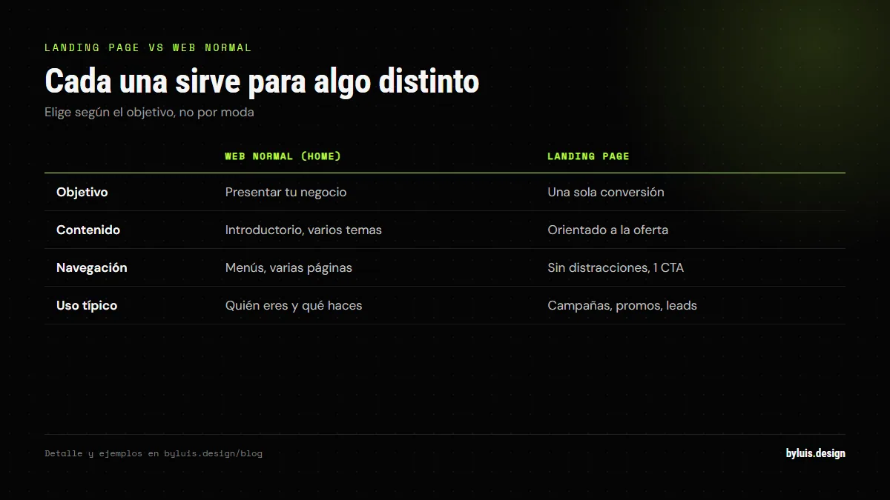
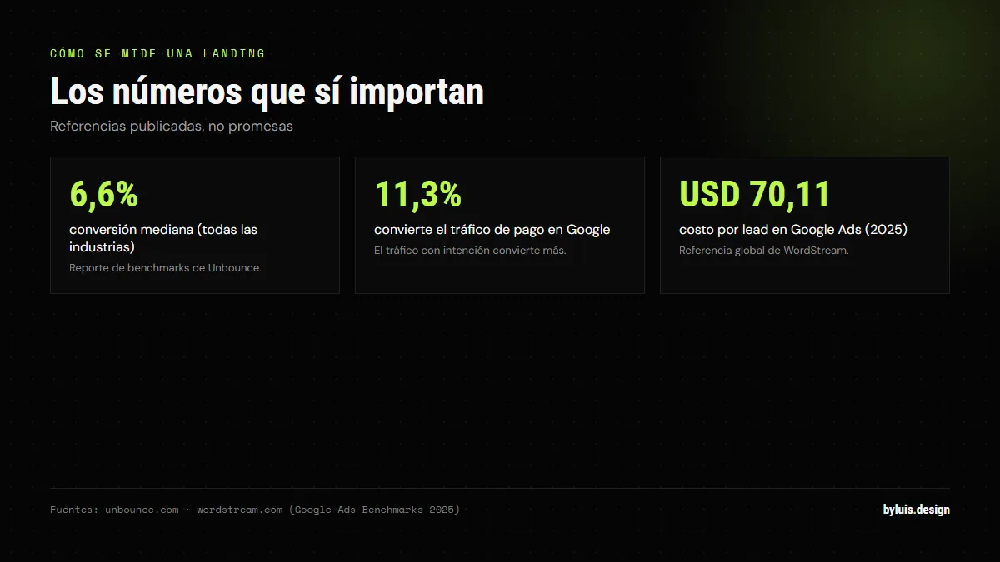

Seguramente has escuchado el término y te suena a anglicismo de moda. Pero la landing page es una de las herramientas más rentables del marketing digital: es la página que convierte tu publicidad en clientes. En esta guía te explico qué es, para qué sirve, cuánto cuesta y por qué tu negocio debería tener una en 2026.
Respuesta corta: una landing page es una página de una sola vista creada con UN único objetivo: que el visitante haga una acción concreta (comprar, dejar sus datos o escribirte por WhatsApp). A diferencia de una web normal, no informa: convierte. Cuesta entre $500.000 y $3.000.000 en Colombia.
Qué es exactamente una landing page
Las páginas de aterrizaje se centran en un único objetivo, que generalmente es la conversión o la generación de clientes potenciales (leads). Llega un visitante, ve un mensaje clarísimo y hace una sola acción: no hay menú que lo distraiga, no hay diez secciones que lo confundan, no hay enlaces que lo saquen de la página.
Piensa en la diferencia: en tu web normal, un visitante puede ir a servicios, leer tu blog, mirar tus proyectos. En una landing page, toda la página empuja a un botón. Eso es lo que la hace tan efectiva.
Landing page vs web normal
| Web normal (home) | Landing page | |
|---|---|---|
| Objetivo | Presentar tu negocio | Una sola conversión |
| Contenido | Introductorio, varios temas | Orientado al objetivo (oferta) |
| Navegación | Menús, varias páginas | Sin distracciones, 1 CTA |
| Uso típico | Quién eres y qué haces | Campañas de ads, promos, leads |
Para qué sirve (y cuándo la necesitas)
- Campañas de Google Ads o Meta Ads: el clic de tu anuncio debe caer en una landing, no en tu home. Así no pierdes el 80% de quienes llegan "de paso".
- Un producto o servicio específico: si vendes "diseño de logos", una landing dedicada a eso convierte más que una sección dentro de tu web.
- Eventos, webinars o promociones: una página temporal con inscripción o compra.
- Captura de leads: con un formulario (nombre, correo, WhatsApp) para contactar después.
Los beneficios reales (con datos)
El beneficio principal es que mejora drásticamente tu tasa de conversión: al centrarse en un único objetivo, la landing obliga a tus visitantes a pasar a la acción. Dos efectos extra que la hacen poderosa:

- Conoces a tu audiencia: al incluir un formulario, puedes solicitar datos demográficos y conocer mejor tu mercado objetivo.
- Mides todo: al ser una página con una sola acción, sabes exactamente cuántos visitantes se convierten. Si no convierte, cambias el titular o el CTA y pruebas otra versión.
La estructura de una landing que convierte
- Titular claro: el beneficio en una frase. "Tu web lista en 3 semanas" > "Servicios de diseño web".
- Subtítulo de apoyo: una línea que refuerza y elimina dudas.
- Beneficios, no características: qué gana el cliente, no qué tiene el producto.
- Prueba social: reseñas, números, logos de clientes.
- Un solo CTA visible: botón repetido 2-3 veces en la página, siempre el mismo.
- Cero distracciones: sin menú, sin enlaces externos, sin banners.
Errores que matan una landing page
- Muchos objetivos: "compra Y suscríbete Y descarga" = ninguno. Una landing, una acción.
- Titular genérico: si no dice el beneficio, no dice nada.
- Sin prueba social: una landing sin reseñas o números convierte mucho menos.
- Formulario largo: cada campo extra mata conversión. Pide lo mínimo: nombre y WhatsApp.
- Cargar lento o no verse bien en móvil: la mayoría del tráfico de ads es móvil.
Cómo se mide una landing page (y qué números mirar)
Una landing sin analítica es una apuesta a ciegas. Antes de lanzar la campaña define una sola conversión y regístrala como evento: clic en el botón de WhatsApp, envío del formulario, clic en "comprar". En Google Analytics 4 eso se configura como evento clave.

Con la conversión registrada, mira cuatro números:
- Tasa de conversión: conversiones divididas por visitas. Referencia real: la mediana de todas las industrias en el reporte de Unbounce es 6,6%, y el tráfico de pago en Google convierte al 11,3%.
- Costo por conversión: lo invertido en publicidad dividido por las conversiones del mes. La referencia global de Google Ads en 2025 es un costo por lead de 70,11 USD.
- Origen del tráfico: un visitante que busca con intención de compra no es igual a uno que vio tu anuncio en redes.
- Calidad del lead: de los que dejaron el dato, cuántos respondieron. Contactos que nunca contestan inflan el número y esconden el problema.
El error más común es mirar solo las visitas. 80 visitas con 6 contactos reales valen más que 500 visitas con cero conversiones, y eso solo lo sabes si estás midiendo.
Landing page y anuncios: el anuncio y la página deben decir lo mismo
Google no solo evalúa tu anuncio: también evalúa la página a la que llega el clic. La experiencia de landing es uno de los tres componentes del Quality Score, junto con el CTR esperado y la relevancia del anuncio, y se califica frente a otros anunciantes.
En números: en 2025 el CTR promedio de Google Ads fue 6,66%, el costo por clic 5,26 USD y la conversión promedio 7,52%, según el análisis de más de 16.000 campañas que publicó WordStream (abril 2024 a marzo 2025). Con un clic tan caro, mandar ese tráfico a tu home es regalar el presupuesto.
- Mismo tema: si el anuncio dice "diseño de logos", el titular de la landing debe hablar de logos. Nada de "servicios de diseño web".
- Un anuncio, una oferta: no mezcles tres servicios en la misma campaña ni en la misma landing.
- El botón coincide: si el anuncio promete "Cotiza gratis", el botón debe decir "Cotiza gratis".
- Manda a la landing, no a la home: el clic debe caer en la página de esa oferta concreta.
Qué hacer si tu landing no convierte
Primero separa el problema: si la gente de Google convierte y la de redes no, el fallo está en el mensaje, no en la página. Si nadie convierte, revisa en este orden:
- El titular. Es lo primero que se lee. Si no dice el beneficio en una frase, no dice nada.
- La prueba social. Súbela, no la dejes al final: reseñas, capturas de resultados y logos cerca del primer botón.
- El formulario. Baymard Institute encontró que 17% de los compradores abandona por un proceso largo o complicado, y que el flujo promedio mostraba 23,48 elementos de formulario cuando bastarían 12 o 14. En una landing de contacto pide nombre y WhatsApp, nada más.
- La velocidad en móvil. En los datos de Unbounce, 83% de las visitas a landing pages son desde el móvil y el móvil convierte 8% menos que el escritorio. Cada segundo de carga se paga.
- El CTA. Que se vea sin hacer scroll y que se repita. Si el usuario tiene que buscarlo, no existe.
Y prueba. Un test A/B serio cambia una sola cosa a la vez: el titular, el botón o la prueba social. Cambia tres cosas y no sabrás cuál funcionó. Deja correr la prueba con tráfico suficiente antes de decidir.
¿Cuánto cuesta una landing page en Colombia?
Los rangos reales del mercado colombiano en 2026: freelancers desde $500.000, agencias entre $1.500.000 y $3.000.000, y el plazo típico es de 2 a 3 semanas. El costo depende del diseño (plantilla vs a medida), las secciones y si incluye el texto (copywriting) o SEO.
Preguntas frecuentes
¿Necesito una web completa o solo una landing?
Depende de tu objetivo. Si vas a lanzar una campaña de publicidad o un producto puntual: landing. Si quieres presencia profesional a largo plazo: web completa + landing para campañas. Lo ideal es tener ambas.
¿Puedo usar una landing para mi web principal?
Sí, muchos negocios pequeños arrancan con una sola landing muy bien hecha (servicio + WhatsApp). Es mejor que una web mediocre de 5 páginas. Cuando crezcas, agregas las secciones.
¿Qué diferencia hay entre landing page y página de inicio?
La página de inicio es introductoria y tiene varios objetivos; la landing ofrece información orientada al objetivo y busca una sola conversión. El contenido de una home es general; el de una landing es específico de la oferta.
¿La landing page ayuda al SEO?
Puede: si apuntas a una keyword específica ("diseño de logos en Bogotá") y la página responde bien, Google puede posicionarla. Pero su fuerte es la conversión de tráfico pagado, no el SEO. Para SEO se usa más el blog y las páginas de servicio.
¿Cuánto tarda en dar resultados una landing page?
Trabaja desde el primer día: verás visitas y clics en el botón de inmediato. Lo que toma tiempo es juntar conversiones suficientes para decidir con datos y no con corazonadas. Conviene lanzar, medir una o dos semanas y ajustar.
¿Cómo sé si mi landing está funcionando?
Comparando tu tasa de conversión con una referencia real: la mediana de todas las industrias en el reporte de Unbounce es 6,6% y el tráfico de pago en Google promedia 11,3%. Si estás muy por debajo, el problema suele ser el mensaje o la oferta, no el diseño.
¿Sirve una landing page si no invierto en publicidad?
Sí. Una landing funciona con cualquier tráfico: tu biografía de Instagram, un link en TikTok, WhatsApp, un correo o el enlace de tu firma. Es útil cuando quieres promocionar un servicio puntual sin cambiar toda tu web.
¿Cuántos campos debe tener el formulario de una landing page?
Los mínimos. Baymard Institute documentó que 17% de los compradores abandona por un proceso largo o complicado, y que el flujo promedio mostraba 23,48 elementos de formulario cuando bastarían 12 o 14. En una landing de contacto, nombre y WhatsApp bastan.
Fuentes: unbounce.com — Conversion Benchmark Report, wordstream.com — Google Ads Benchmarks 2025, support.google.com — Quality Score y experiencia de landing, baymard.com — abandono de carrito.
Sigue leyendo
Te la hago con titular, copy y CTA pensados para vender
No es una página bonita: es una página que convierte. Te muestro ejemplos reales y te cotizo tu landing sin compromiso.